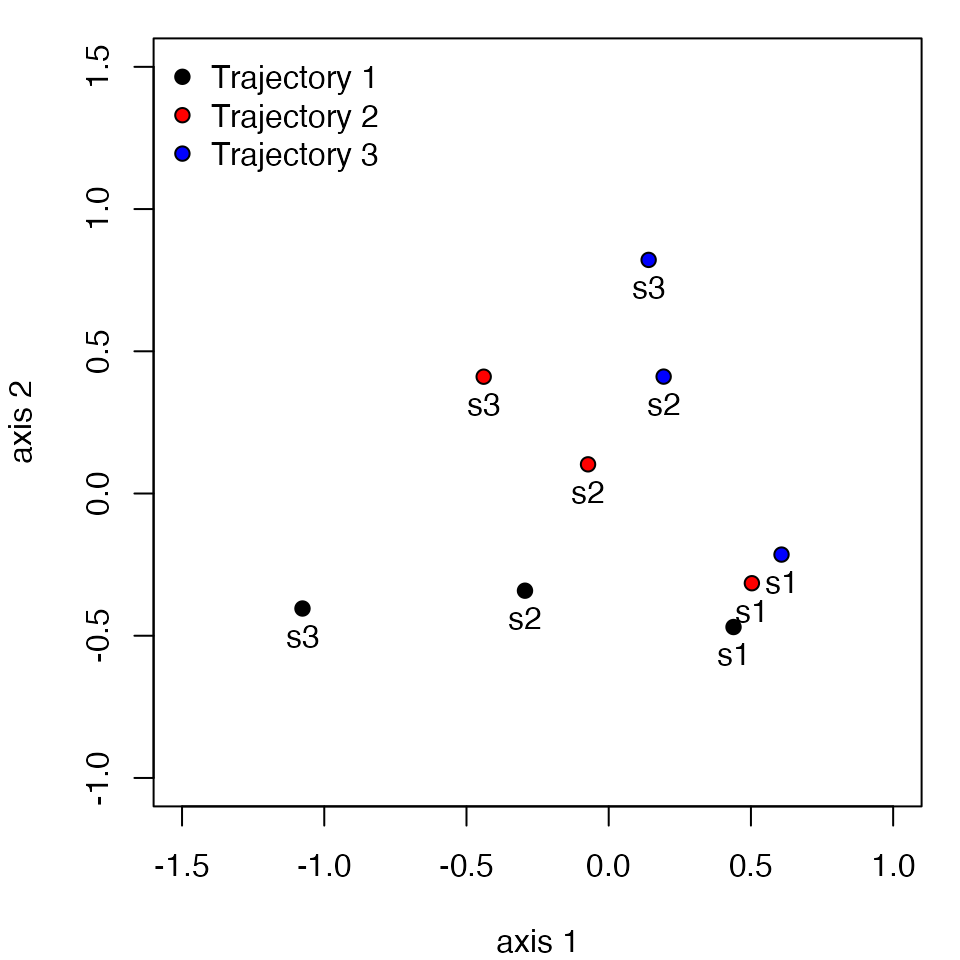
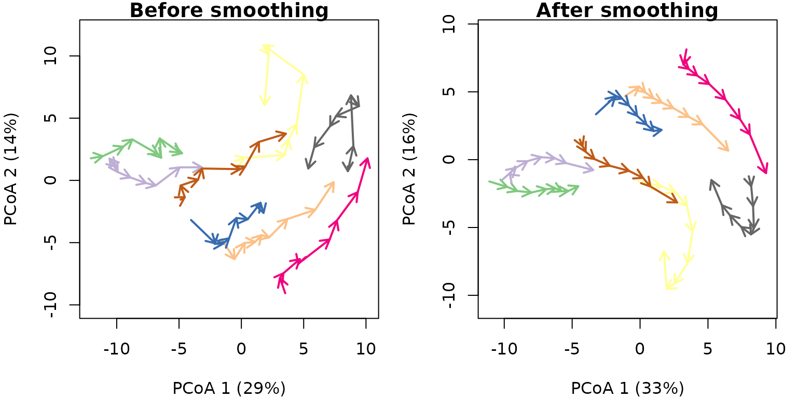

Introduction to Ecological Trajectory Analysis (ETA)
Miquel De Cáceres
2024-08-26
Source:vignettes/IntroductionETA.Rmd
IntroductionETA.Rmd1. Introduction
1.1 What is Ecological Trajectory Analysis?
Ecological Trajectory Analysis (ETA) is a framework to analyze ecosystem dynamics described as trajectories in a chosen space of ecosystem resemblance. ETA takes trajectories as objects to be analyzed and compared geometrically. The framework was presented for community ecology in:
- De Cáceres M, Coll L, Legendre P, et al (2019) Trajectory analysis in community ecology. Ecol Monographs 89:e01350. https://doi.org/10.1002/ecm.1350.
The framework was then extended with new metrics and visualisation modes in:
- Sturbois, A., De Cáceres, M., Sánchez-Pinillos, M., Schaal, G., Gauthier, O., Le Mao, P., Ponsero, A., & Desroy, N. (2021). Extending community trajectory analysis : New metrics and representation. Ecological Modelling 440: 109400. https://doi.org/10.1016/j.ecolmodel.2020.109400.
Procedures of trajectory analysis can be applied to data beyond community data tables. For this reason we now call the framework ‘Ecological Trajectory Analysis’ and provide a package ecotraj that offers a set of functions to calculate metrics and produce plots.
2. Simple example
In this section we describe how to study the trajectories of three sites that have been surveyed four times each. We use a small dataset where trajectories occur in a space of two dimensions, so that geometric calculations can be followed more easily.
2.1 Trajectory data
To specify ecosystem dynamics, we need three data items:
- A set of ecosystem states (i.e. coordinates in a space ), described using a distance matrix ;
- A vector specifying the site (i.e. sampling unit) corresponding to each ecosystem state;
- A vector specifying the survey (i.e. time point) corresponding to the sampling of each ecosystem state.
In CTA, sampling units do not need to be surveyed synchronously nor the same number of times. However, in this example we assume all three sites have been surveyed synchronously four times.
Let us first define the vectors that describe the site and the survey of each ecosystem state:
#Description of sites and surveys
sites = c(1,1,1,1,2,2,2,2,3,3,3,3)
surveys=c(1,2,3,4,1,2,3,4,1,2,3,4)We then define a matrix whose coordinates correspond to the set of
ecosystem states observed. The number of rows in this matrix has to be
equal to the length of vectors sites and
surveys. We assume that the ecosystem space
has two dimensions:
#Raw data table
xy<-matrix(0, nrow=12, ncol=2)
xy[2,2]<-1
xy[3,2]<-2
xy[4,2]<-3
xy[5:6,2] <- xy[1:2,2]
xy[7,2]<-1.5
xy[8,2]<-2.0
xy[5:6,1] <- 0.25
xy[7,1]<-0.5
xy[8,1]<-1.0
xy[9:10,1] <- xy[5:6,1]+0.25
xy[11,1] <- 1.0
xy[12,1] <-1.5
xy[9:10,2] <- xy[5:6,2]
xy[11:12,2]<-c(1.25,1.0)
cbind(sites,surveys,xy)## sites surveys
## [1,] 1 1 0.00 0.00
## [2,] 1 2 0.00 1.00
## [3,] 1 3 0.00 2.00
## [4,] 1 4 0.00 3.00
## [5,] 2 1 0.25 0.00
## [6,] 2 2 0.25 1.00
## [7,] 2 3 0.50 1.50
## [8,] 2 4 1.00 2.00
## [9,] 3 1 0.50 0.00
## [10,] 3 2 0.50 1.00
## [11,] 3 3 1.00 1.25
## [12,] 3 4 1.50 1.00The matrix of Euclidean distances between ecosystem states in is then:
#Distance matrix
D = dist(xy)
D## 1 2 3 4 5 6 7
## 2 1.0000000
## 3 2.0000000 1.0000000
## 4 3.0000000 2.0000000 1.0000000
## 5 0.2500000 1.0307764 2.0155644 3.0103986
## 6 1.0307764 0.2500000 1.0307764 2.0155644 1.0000000
## 7 1.5811388 0.7071068 0.7071068 1.5811388 1.5206906 0.5590170
## 8 2.2360680 1.4142136 1.0000000 1.4142136 2.1360009 1.2500000 0.7071068
## 9 0.5000000 1.1180340 2.0615528 3.0413813 0.2500000 1.0307764 1.5000000
## 10 1.1180340 0.5000000 1.1180340 2.0615528 1.0307764 0.2500000 0.5000000
## 11 1.6007811 1.0307764 1.2500000 2.0155644 1.4577380 0.7905694 0.5590170
## 12 1.8027756 1.5000000 1.8027756 2.5000000 1.6007811 1.2500000 1.1180340
## 8 9 10 11
## 2
## 3
## 4
## 5
## 6
## 7
## 8
## 9 2.0615528
## 10 1.1180340 1.0000000
## 11 0.7500000 1.3462912 0.5590170
## 12 1.1180340 1.4142136 1.0000000 0.5590170CTA is based on the analysis of information in the distance matrix . Therefore, it does not require explicit coordinates. This is an advantage because it allows the analysis to be conducted on arbitrary metric (or semi-metric) spaces. The choice of is left to the user and will depend on the problem at hand.
2.2 Displaying trajectories
To begin our analysis of the three trajectories, we display them in
an ordination space, using function trajectoryPCoA. Since
has only two dimensions in this example, the Principal Coordinates
Analysis (PCoA) on
displays the complete space:
oldpar <- par(mar=c(4,4,1,1))
trajectoryPCoA(D, sites, surveys, traj.colors = c("black","red", "blue"), lwd = 2,
survey.labels = T)
legend("topleft", col=c("black","red", "blue"),
legend=c("Trajectory 1", "Trajectory 2", "Trajectory 3"), bty="n", lty=1, lwd = 2)
par(oldpar)While trajectory of site ‘1’ (black arrows) is made of three segments of the same length and direction, trajectory of site ‘2’ (red arrows) has a second and third segments that bend and are shorter than that of the segond segment of site ‘1’. Trajectory of site ‘3’ includes a stronger change in direction and shorter segments.
As this example has two dimensions and we used Euclidean distance,
the same plot (albeit rotated) can be straightforwardly obtained using
matrix xy and function trajectoryPlot:
oldpar<-par(mar=c(4,4,1,1))
trajectoryPlot(xy, sites, surveys, traj.colors = c("black","red", "blue"), lwd = 2,
survey.labels = T)
legend("topright", col=c("black","red", "blue"),
legend=c("Trajectory 1", "Trajectory 2", "Trajectory 3"), bty="n", lty=1, lwd = 2)
par(oldpar)While trajectoryPCoA uses PCoA (also known as classical
Multidimensional Scaling) to display trajectories, users can display
ecosystem trajectories using other ordination techniques such as metric
Multidimensional Scaling (mMDS; see function mds of package
smacof) or non-metric MDS (nMDS; see function
metaMDS in package vegan or function
isoMDS in package MASS). Function
trajectoryPlot will help drawing arrows between segments to
represent trajectories on the ordination space given by any of these
methods.
Functions trajectoryPCoAand trajectoryPlot
allow selecting the subset of trajectories to be displayed, so that the
representation can focus on particular pathways (see also function
trajectorySelection).
2.3 Trajectory lengths, angles and overall directionality
One may be interested in studying the geometric properties of
particular trajectories. For example, one can obtain the length of
trajectory segments and the total pathway length using function
trajectoryLengths:
trajectoryLengths(D, sites, surveys)## S1 S2 S3 Trajectory
## 1 1 1.000000 1.0000000 3.000000
## 2 1 0.559017 0.7071068 2.266124
## 3 1 0.559017 0.5590170 2.118034In CTA, angles are measured using triplets of time-ordered ecosystem
states (a pair of consecutive segments is an example of such triplets).
As matrix
may represent a space of multiple dimensions, angles cannot be
calculated with respect to a single plane. Instead, each angle is
measured on the plane defined by each triplet. Zero angles indicate that
the three points (e.g. the two consecutive segments) are in a straight
line. The larger the angle value, the more is trajectory changing in
direction. Mean and standard deviation statistics of angles are
calculated according to circular statistics. Function
trajectoryAngles allows calculating the angles between
consecutive segments:
trajectoryAngles(D, sites, surveys)## S1-S2 S2-S3 mean sd rho
## 1 0.00000 0.00000 0.00000 0.00000000 1.0000000
## 2 26.56505 18.43495 22.50000 0.07097832 0.9974842
## 3 63.43495 53.13010 58.28253 0.08998746 0.9959593While site ‘1’ follows a straight pathway, angles are > 0 for
trajectories of site ‘2’ and ‘3’, denoting the change in direction. In
this case, the same information could be obtained by inspecting the
previous plots, but in a case where
has many dimensions, the representation will correspond to a reduced
(ordination) space and hence, angles and lengths in the plot will not
correspond exactly to those of functions trajectoryLengths
and trajectoryAngles, which take into account the complete
space.
Angles can be calculated not only for all consecutive segments but
for all four triplets of ordered ecosystem states, whether of
consecutive segments or not (i.e., between points 1-2-3, 1-2-4, 1-3-4
and 2-3-4). This is done by specifying all=TRUE in
trajectoryAngles:
trajectoryAngles(D, sites, surveys, all=TRUE)## A1 A2 A3 A4 mean sd rho
## 1 0.00000 0.0000 0.00000 0.00000 0.00000 0.0000000 1.0000000
## 2 26.56505 36.8699 35.53768 18.43495 29.36033 0.1300790 0.9915754
## 3 63.43495 90.0000 94.76364 53.13010 75.36015 0.3078934 0.9537066The mean resultant length of circular statistics (column
rho of the previous result), which takes values between 0
and 1, can be used to assess the degree of homogeneity of angle values
and it will take a value of 1 if all angles are the same. This approach,
however, uses only angular information and does not take into account
the length of segments.
To measure the overall directionality of a ecosystem trajectory
(i.e. if the pathway consistently follows the same direction in
), we recommend using another statistic that is sensitive to both angles
and segment lengths and is implemented in function
trajectoryDirectionality:
trajectoryDirectionality(D, sites, surveys)## 1 2 3
## 1.0000000 0.8274026 0.5620859As known from previous plots, trajectory of site ‘2’ is less straight than trajectory of site ‘1’ and that of site ‘3’ has the lowest directionality value. Note that function only computes a descriptive statistic, i.e. it does not perform any statistical test on directionality.
2.4 Relative positions within trajectories
Ecosystem states occupy a position within their trajectory that
depends on the total pathway length of the trajectory (see Fig. 2 of De
Cáceres et al. 2019). By adding the length of segments prior to a given
state and dividing the sum by the total length of the trajectory we
obtain the relative position of the ecosystem state. Function
trajectoryProjection allows obtaining the relative position
of each point of a trajectory. To use it for this purpose one should use
as parameters the distance matrix between states and the indices that
conform the trajectory, which have to be entered twice. For example for
the two example trajectories we would have:
trajectoryProjection(D, 1:4, 1:4)## distanceToTrajectory segment relativePosition
## 1 0 1 0.0000000
## 2 0 1 0.3333333
## 3 0 2 0.6666667
## 4 0 3 1.0000000If we inspect the relative positions of the points in the trajectory of site ‘2’, we find than the second and third segments have relative positions larger than 1/3 and 2/3, respectively, because the second and third segments are shorter:
trajectoryProjection(D, 5:8, 5:8)## distanceToTrajectory segment relativePosition
## 5 0 1 0.0000000
## 6 0 1 0.4412822
## 7 0 2 0.6879664
## 8 NA NA NAFunction trajectoryProjection can also be used to
project arbitrary ecosystem states onto a given
reference trajectory. For example we can study the projection of third
state of the trajectory of site ‘2’ (i.e. state 7) onto the trajectory
of site ‘1’ (i.e. states 1 to 4), which happens to be in the half of the
trajectory:
trajectoryProjection(D, 7, 1:4)## distanceToTrajectory segment relativePosition
## 7 0.5 2 0.5If we project the points of the trajectory of site ‘3’ onto the trajectory of site ‘1’ we see how the curved pathway of site ‘3’ projects its fourth point to the same relative position as its second point.
trajectoryProjection(D, 9:12, 1:4)## distanceToTrajectory segment relativePosition
## 9 0.5 1 -3.700743e-17
## 10 0.5 2 3.333333e-01
## 11 1.0 2 4.166667e-01
## 12 1.5 1 3.333333e-012.5 Trajectory convergence
When trajectories have been sampled the same number of times, one can
study their symmetric convergence or divergence (see Fig. 3a of De
Cáceres et al. 2019). Function trajectoryConvergence allows
performing tests of convergence based on the trend analysis of the
sequences of distances between points of the two trajectories
(i.e. first-first, second-second, …):
trajectoryConvergence(D, sites, surveys, symmetric = TRUE)## $tau
## 1 2 3
## 1 NA 0.9128709 0.9128709
## 2 0.9128709 NA 0.9128709
## 3 0.9128709 0.9128709 NA
##
## $p.value
## 1 2 3
## 1 NA 0.1485617 0.1485617
## 2 0.1485617 NA 0.1485617
## 3 0.1485617 0.1485617 NAThe function performs the Mann-Whitney trend test. Values of the
statistic (‘tau’) larger than 0 correspond to trajectories that are
diverging, whereas values lower than 0 correspond to trajectories that
are converging. By setting symmetric = FALSE the
convergence test becomes asymmetric (see Figs. 3b and 3c of De Cáceres
et al. 2019). In this case the sequence of distances between every
point of one trajectory and the other:
trajectoryConvergence(D, sites, surveys, symmetric = FALSE)## WARNING: Error exit, tauk2. IFAULT = 12## $tau
## 1 2 3
## 1 NA 0.9128709 0.9128709
## 2 0.9128709 NA 0.8164966
## 3 0.9128709 0.6666666 NA
##
## $p.value
## 1 2 3
## 1 NA 0.1485617 0.1485617
## 2 0.1485617 NA 1.0000000
## 3 0.1485617 0.3081795 NAThe asymmetric test is useful to determine if one trajectory is becoming closer to the other or if it is departing from the other.
2.6 Distances between segments and trajectories
To start comparing trajectories between sites (i.e. between sampling
units), one important step is the calculation of distances between
directed segments (see Fig. 4 of De Cáceres et al. 2019), which can be
obtained by calling function segmentDistances:
Ds = segmentDistances(D, sites, surveys)$Dseg
Ds## 1[1-2] 1[2-3] 1[3-4] 2[1-2] 2[2-3] 2[3-4] 3[1-2]
## 1[2-3] 1.0000000
## 1[3-4] 2.0000000 1.0000000
## 2[1-2] 0.2500000 1.0307764 2.0155644
## 2[2-3] 1.0307764 0.7071068 1.5811388 1.0000000
## 2[3-4] 1.5811388 1.0000000 1.4142136 1.5206906 0.7071068
## 3[1-2] 0.5000000 1.1180340 2.0615528 0.2500000 1.0307764 1.5000000
## 3[2-3] 1.1180340 1.1180340 2.0124612 1.0307764 0.5590170 0.7500000 1.0000000
## 3[3-4] 1.6007811 1.5590170 2.0155644 1.4577380 1.1180340 1.0606602 1.5590170
## 3[2-3]
## 1[2-3]
## 1[3-4]
## 2[1-2]
## 2[2-3]
## 2[3-4]
## 3[1-2]
## 3[2-3]
## 3[3-4] 0.5590170Distances between segments are affected by differences in both
position, size and direction. Hence, among
the six segments of this example, the distance is maximum between the
last segment of trajectory ‘1’ (named 1[3-4]) and the first
segment of trajectory ‘3’ (named 3[1-2]).
One can display distances between segments in two dimensions using mMDS.
mMDS = smacof::mds(Ds)
mMDS##
## Call:
## smacof::mds(delta = Ds)
##
## Model: Symmetric SMACOF
## Number of objects: 9
## Stress-1 value: 0.062
## Number of iterations: 15
xret = mMDS$conf
oldpar<-par(mar=c(4,4,1,1))
plot(xret, xlab="axis 1", ylab = "axis 2", asp=1, pch=21,
bg=c(rep("black",3), rep("red",3), rep("blue",3)),
xlim=c(-1.5,1), ylim=c(-1,1.5))
text(xret, labels=rep(paste0("s",1:3),3), pos=1)
legend("topleft", pt.bg=c("black","red","blue"), pch=21, bty="n", legend=c("Trajectory 1", "Trajectory 2", "Trajectory 3"))
par(oldpar)Distances between segments are internally calculated when comparing
whole trajectories using function trajectoryDistances. Here
we show the dissimilarity between the two trajectories as assessed using
either the Hausdorff distance (equal to the maximum distance
between directed segments; see eq. 8 in De Cáceres et al. 2019) or the
directed segment path distance (an average of distances between
segments; see eq. 13 in De Cáceres et al. 2019):
trajectoryDistances(D, sites, surveys, distance.type = "Hausdorff")## 1 2
## 2 2.015564
## 3 2.061553 1.500000
trajectoryDistances(D, sites, surveys, distance.type = "DSPD")## 1 2
## 2 0.7214045
## 3 1.1345910 0.5714490DSPD is a symmetrized distance. To calculate non-symmetric distances one uses (see eq. 11 in De Cáceres et al. 2019):
trajectoryDistances(D, sites, surveys, distance.type = "DSPD", symmetrization = NULL)## 1 2 3
## 1 0.0000000 0.7904401 1.2101651
## 2 0.6523689 0.0000000 0.5196723
## 3 1.0590170 0.6232257 0.00000003. Structural dynamics in permanent plots
In this example we analyze the dynamics of 8 permanent forest plots located on slopes of a valley in the New Zealand Alps. The study area is mountainous and centered on the Craigieburn Range (Southern Alps), South Island, New Zealand (see map in Fig. 8 of De Cáceres et al. 2019). Forests plots are almost monospecific, being the mountain beech (Fuscospora cliffortioides) the main dominant tree species. Previously forests consisted of largely mature stands, but some of them were affected by different disturbances during the sampling period (1972-2009) which includes 9 surveys. We begin our example by loading the data set, which includes 72 plot observations:
data("avoca")Community data is in form of an object
stratifiedvegdata. To account for differences in tree
diameter, while emphasizing regeneration, the data contains individual
counts to represent tree abundance and trees are classified in 19
quadratic diameter bins (in cm): {(2.25, 4], (4, 6.25], (6.25, 9], …
(110.25, 121]}. The data set also includes vectors
avoca_surveys and avoca_sites that indicate
the survey and forest plot corresponding to each forest state.
Before starting community trajectory analysis, we have to use
function vegdiststruct from package
vegclust to calculate distances between forest plot
states in terms of structure and composition (see De Cáceres M, Legendre
P, He F (2013) Dissimilarity measurements and the size structure of
ecological communities. Methods Ecol Evol 4:1167–1177. https://doi.org/10.1111/2041-210X.12116):
avoca_D_man = vegclust::vegdiststruct(avoca_strat, method="manhattan", transform = function(x){log(x+1)})Distances in avoca_D_man are calculated using the
Manhattan metric.
3.1 Display trajectories in PCoA
The distance matrix avoca_D_man conforms our definition
of
.
We use trajectoryPCoA to display the relations between
forest plot states in this space and to draw the trajectory of each
plot:
oldpar <- par(mar=c(4,4,1,1))
trajectoryPCoA(avoca_D_man, avoca_sites, avoca_surveys,
traj.colors = RColorBrewer::brewer.pal(8,"Accent"),
axes=c(1,2), length=0.1, lwd=2)## Warning in cmdscale(D2, eig = TRUE, add = TRUE, k = nrow(as.matrix(D2)) - :
## only 70 of the first 71 eigenvalues are > 0
legend("topright", bty="n", legend = 1:8, col = RColorBrewer::brewer.pal(8,"Accent"), lwd=2)
par(oldpar)Note that in this case, the full
includes more than two dimensions, and PCoA is representing 43% of total
variance (correction for negative eigenvalues is included in the call to
cmdscale from trajectoryPCoA), so one has to
be careful when interpreting trajectories visually.
Another option is to use mMDS to represent trajectories, which in this case produces a similar result:
mMDS = smacof::mds(avoca_D_man)
mMDS##
## Call:
## smacof::mds(delta = avoca_D_man)
##
## Model: Symmetric SMACOF
## Number of objects: 72
## Stress-1 value: 0.114
## Number of iterations: 49
oldpar <- par(mar=c(4,4,1,1))
trajectoryPlot(mMDS$conf, avoca_sites, avoca_surveys,
traj.colors = RColorBrewer::brewer.pal(8,"Accent"),
axes=c(1,2), length=0.1, lwd=2)
legend("topright", bty="n", legend = 1:8, col = RColorBrewer::brewer.pal(8,"Accent"), lwd=2)
par(oldpar)One can inspect specific trajectories using argument
selection in function trajectoryPCoA. This
allows getting a better view of particular trajectories, here that of
forest plot ‘3’:
oldpar <- par(mfrow=c(1,2))
trajectoryPCoA(avoca_D_man, avoca_sites, avoca_surveys,
selection= 3,
length=0.1, lwd=2, survey.labels = T)
plotTrajDiamDist(3)
par(oldpar)In the right hand, we added a representation of the change in the mountain beech tree diameter distribution through time for trajectory of forest plot ‘3’. The dynamics of this plot include mostly growth, which results in individuals moving from one diameter class to the other. The whole trajectory looks mostly directional. Let’s now inspect the trajectory of forest plot ‘4’:
oldpar <- par(mfrow=c(1,2))
trajectoryPCoA(avoca_D_man, avoca_sites, avoca_surveys,
selection= 4,
length=0.1, lwd=2, survey.labels = T)
plotTrajDiamDist(4)
par(oldpar)This second trajectory is less straight and seems to include a turn by the end of the sampling period, corresponding to the recruitment of new saplings.
3.2 Trajectory lengths, angles and overall directionality
While trajectory lengths and angles can be inspected visually in
ordination diagrams, it is better to calculate them using the full
space (i.e., from matrix avoca_D_man). Using function
trajectoryLengths we can see that the trajectory of forest
plot ‘4’ is lengthier than that of plot ‘3’, mostly because includes a
lengthier last segment (i.e. the recruitment of new individuals):
trajectoryLengths(avoca_D_man, avoca_sites, avoca_surveys)## S1 S2 S3 S4 S5 S6 S7
## 1 1.2173214 1.5911988 1.0976965 2.1173501 0.5238760 1.5863283 1.5750365
## 2 0.5971165 1.7469687 0.9866591 0.9413060 1.3687614 0.6280231 1.4565581
## 3 1.1480971 1.2404953 0.6508116 0.4371405 0.5098385 1.2078811 1.6241741
## 4 0.7932307 1.8572629 0.7268623 0.8348635 3.0560437 1.9863939 0.9905892
## 5 1.7769875 0.3367341 0.7283030 0.6515714 1.2660552 0.9544933 1.2605333
## 6 2.1891568 0.5312711 1.0035212 0.4113220 2.1394743 1.0482871 1.4924056
## 7 0.2919002 0.8857645 1.0908604 0.5601649 2.0600208 0.3712067 1.1014563
## 8 0.1909713 1.2000266 2.3211891 0.6539882 2.7807668 0.8170202 1.2072425
## S8 Trajectory
## 1 0.6277940 10.336602
## 2 1.1232798 8.848673
## 3 1.4536390 8.272077
## 4 3.8794520 14.124698
## 5 0.5842314 7.558909
## 6 1.9623777 10.777816
## 7 1.7518489 8.113223
## 8 1.5107357 10.681940If we calculate the angles between consecutive segments (using
function trajectoryLengths) we see that indeed the
trajectory of ‘3’ is rather directional, but the angles of trajectory of
‘4’ are larger, on aveerage:
avoca_ang <- trajectoryAngles(avoca_D_man, avoca_sites, avoca_surveys)
avoca_ang## S1-S2 S2-S3 S3-S4 S4-S5 S5-S6 S6-S7
## 1 41.74809 8.669806e+01 7.401875e+01 26.94138 113.40657 100.67068
## 2 68.14891 3.466506e+01 8.537736e-07 0.00000 25.97111 0.00000
## 3 87.24519 3.088828e+01 1.207418e-06 0.00000 50.90743 48.12854
## 4 37.65736 8.537736e-07 8.537736e-07 36.25240 55.53607 74.21065
## 5 42.02156 7.166400e+01 1.207418e-06 49.95436 65.75897 65.82083
## 6 41.69894 4.611675e+01 5.669641e+01 135.84929 0.00000 0.00000
## 7 53.63254 1.152378e+02 6.519921e+01 60.71442 0.00000 56.25733
## 8 180.00000 0.000000e+00 9.213121e+01 132.36445 71.33948 36.43189
## S7-S8 mean sd rho
## 1 1.021996e+02 78.82477 0.5334615 0.8673692
## 2 1.207418e-06 17.61550 0.4257423 0.9133572
## 3 4.568199e+01 37.39925 0.5018798 0.8816663
## 4 4.980332e+01 36.44717 0.4531030 0.9024417
## 5 1.061250e+02 57.89321 0.5239476 0.8717431
## 6 0.000000e+00 34.34150 0.7777287 0.7390195
## 7 1.207418e-06 49.96352 0.6562139 0.8062928
## 8 1.207418e-06 66.68343 1.1601974 0.5101610By calling function trajectoryDirectionality we can
confirm that the trajectory for site ‘4’ is less straight than that of
site ‘3’:
avoca_dir <- trajectoryDirectionality(avoca_D_man, avoca_sites, avoca_surveys)
avoca_dir## 1 2 3 4 5 6 7 8
## 0.6781369 0.6736490 0.8651467 0.5122482 0.6677116 0.7058465 0.7391775 0.5254225The following code displays the relationship between the statistic in
trajectoryDirectionality and the mean resultant vector
length that uses angular information only and assesses the constancy of
angle values:
avoca_rho = trajectoryAngles(avoca_D_man, avoca_sites, avoca_surveys, all=TRUE)$rho
oldpar <- par(mar=c(4,4,1,1))
plot(avoca_rho, avoca_dir, xlab = "rho(T)", ylab = "dir(T)", type="n")
text(avoca_rho, avoca_dir, as.character(1:8))
par(oldpar)3.3 Distances between trajectories
We can calculate the resemblance between forest plot trajectories
using trajectoryDistances:
## 1 2 3 4 5 6 7
## 2 2.405
## 3 6.805 5.773
## 4 6.123 6.646 5.225
## 5 6.020 5.541 3.235 4.966
## 6 9.490 8.866 3.436 6.043 4.505
## 7 4.024 3.291 4.365 4.993 4.389 6.205
## 8 9.797 9.747 5.591 4.611 6.383 5.043 6.949The closest trajectories are those of plots ‘1’ and ‘2’. They looked rather close in position in the PCoA ordination of with all trajectories, so probably it is position, rather than shape which has influenced this low value. The next pair of similar trajectories are those of the ‘3’-‘5’ pair. We can again use mMDS to produce an ordination of resemblances between trajectories:
mMDS<-smacof::mds(avoca_D_traj_man)
mMDS##
## Call:
## smacof::mds(delta = avoca_D_traj_man)
##
## Model: Symmetric SMACOF
## Number of objects: 8
## Stress-1 value: 0.091
## Number of iterations: 25
x<-mMDS$conf[,1]
y<-mMDS$conf[,2]
oldpar <- par(mar=c(4,4,1,1))
plot(x,y, type="p", asp=1, xlab=paste0("Axis 1"),
ylab=paste0("Axis 2"), col="black",
bg= RColorBrewer::brewer.pal(8,"Accent"), pch=21)
text(x,y, labels=1:8, pos=1)
par(oldpar)Distances between trajectories can be calculated after centering them
(i.e. after bringing all trajectories to the center of the
space). This is done using function centerTrajectories,
which returns a new dissimilarity matrix. Centering removes differences
in position between trajectories, which is useful in cases
where one wants to focus on spatio-temporal interaction while discarding
spatial patterns that are constant in time. We do no illustrate
centering here, because in is not interesting for this particular
example.
3.4 Smoothing noisy trajectories
Although trajectories in this data set are not particularly noisy,
package ecotraj includes function
trajectorySmoothing() to smooth out noise from
trajectories. This is done by applying a Gaussian kernel over each
trajectory:
where
is the survey time of the target location,
is the survey time of one the original points and
is the kernel scale. Kernel values are normalized to one and they are
used to determine (implicitly) the new coordinates of ecosystem
observations. The kernel application turns consecutive ecosystem states
more similar.
Function trajectorySmoothing() performs the smoothing
operation and returns a modified distance matrix describing distances
between ecosystem states:
avoca_D_man_smooth <- trajectorySmoothing(avoca_D_man, avoca_sites, avoca_surveys)The following figure illustrates the effect of smoothing:

Trajectory smoothing logically alters several trajectory metrics. In particular, overall trajectory length is reduced:
trajectoryLengths(avoca_D_man, avoca_sites, avoca_surveys)$Trajectory## [1] 10.336602 8.848673 8.272077 14.124698 7.558909 10.777816 8.113223
## [8] 10.681940
trajectoryLengths(avoca_D_man_smooth, avoca_sites, avoca_surveys)$Trajectory## [1] 6.776356 7.601166 6.792566 11.049763 5.741160 8.884752 6.351899
## [8] 7.884819while trajectory directionality is increased:
trajectoryDirectionality(avoca_D_man, avoca_sites, avoca_surveys)## 1 2 3 4 5 6 7 8
## 0.6781369 0.6736490 0.8651467 0.5122482 0.6677116 0.7058465 0.7391775 0.5254225
trajectoryDirectionality(avoca_D_man_smooth, avoca_sites, avoca_surveys)## 1 2 3 4 5 6 7 8
## 0.8043023 0.7034985 0.9107370 0.5753210 0.7545522 0.7586568 0.8084251 0.6322645Whether these effects are desirable or not, will depend on the application.